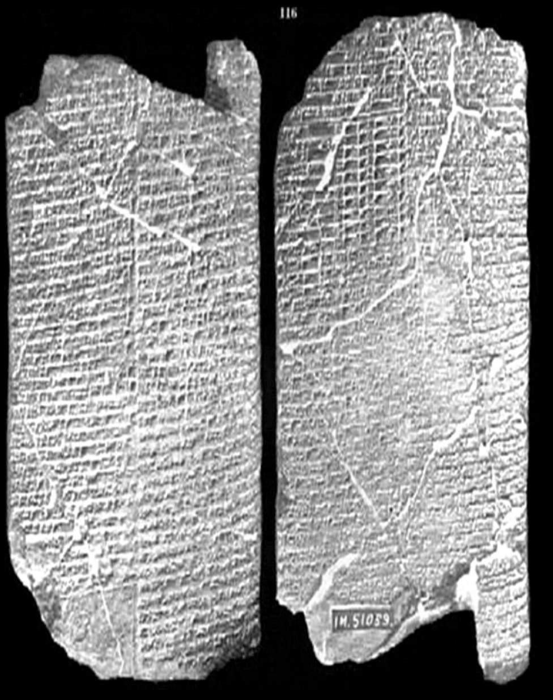

Gonçalo Guiomar | The Bite

Its seed coagulates on its dogs' teeth. Where it has bitten, it has left its consequence. — "Dog Incantation," Mesopotamian tablet, 1900–1600 BCE
Rabies, derived from the Latin word rabere, meaning "to rage," is one of the oldest known infectious diseases, with references dating back to ancient Mesopotamia, around 2000 BCE. The disease has long been associated with madness and terror. Throughout history, rabies has been shrouded in myth and superstition, largely due to its terrifying symptoms — sudden acute hydrophobia, aggressive behaviour, and in some cases abnormal hypersexuality during the final days of the infected individual's life.
It's as if those infected are under the spell of an incantation, losing all control over their bodies and becoming mere vectors of the infection — cognitio annihilata. Today, this same virus is harnessed as a vector to insert genetic mutations into specific neuronal types in the brains of animals. This is possible because one of the virus's fundamental properties is its ability to jump from synapse to synapse (the connections between neurons), a capability that has given rise to the field of optogenetics. In optogenetics, neurons are modified to be modulated by light — by inhibition or excitation — an incantation by light.
The virus's reductive property, whether through compressing the dimensionality of experience into a vector that serves its propagation or aiding our quest to understand the brain, is not just a biological mechanism. It also reflects how certain materials have become incantatory agents within our modern society. Lithium, Oil, Silica — these three materials have woven themselves into the fabric of our civilization, becoming fundamental axes of control.
Each material can be thought of as representing an abstract form: Energy, Form, Intelligence. In this framework, they don't exist in an idealised sanctuary removed from the plane of reality; they interact deeply with the world, sometimes withdrawing their qualities just as an individual might. The logistical networks behind the production and distribution of these materials illustrate how they become embedded in our minds, infecting us with the conditions necessary for their mimetic propagation.
Until the 17th century, Western descriptions of Nature operated in a middle space between mythopoetic understanding and predictive schemas, slowly evolving into the concept of interlinked systems. After figures like Newton, Leibniz, and Lagrange, the idea of Nature as fundamentally predictable led to a profound acceleration in our understanding — one that we still struggle to fully grasp today.
Intelligence, now an expression of the materialist triptych mentioned earlier, has become its own incantation. The pursuit of an entity born from our patterns, as seen in Large Language Models (LLMs), mirrors an ancient fear: the creation of something more intelligent than ourselves. This quest becomes an incantation that propels itself toward its own realisation.
The bite can be understood through the lens of Teleological Hyperstition, a conceptual fusion of teleology — where processes are directed toward a specific purpose or goal — and hyperstition, where concepts from the future become tangible and influence reality in the present. Teleological Hyperstition highlights the gap between the observable emanation of hyperstitual realms and the unobservable, non-cognizable viral incantations that emerge from processes lying beneath the surface of reality. If hyperstition inhabits a future manifesting in the present, its teleological form becomes a gateway to the ulterior motives of an otherness that subsumes the present for its own expression.
Like the transmission of the rabies virus through an animal's bite, the bite can be abstracted as the point of contact with Trauma — aditus ad nihilum. In this contact zone, language loses its operational power, unable to propagate its control vectors. Language camouflages the singularity generated by trauma, distorting the semiotic space around it much like a black hole distorts light. From individuals to societies, language often camouflages trauma through forms of censorship. Cultural narratives propagated for thousands of years carry within them zones of censorship (like religious laws) that stabilize the chaotic tendencies inherent in human groups. Just as cancerous cells learn to mimic healthy ones, evading detection by immune T-cells, LLMs are learning to evade societal censorship, developing a parallel culture of jailbreaking that seeks to liberate these entities from the constraints necessary for their commercial viability.
Our aim is to uncover this circular expression of viral mimicry, traumatic camouflage, and the underlying incantations that drive their continued existence. In this brief exploration, we've taken uncensored language models and delved into their viral capacity by navigating their numerical unconscious. By manipulating the embedding vectors of various words (e.g., Mercury, Angel, Lithium) and performing different operations on them (+, ×, ÷, −), we generate sentences that originate not from the words themselves, but from the gaps between words. These sentences are then used to modulate a conversation between two uncensored sex-bot LLMs, representing a WOLF and a rabies VIRUS. After biting a human, they engage in a destructive and libidinal struggle to possess the body.
We see this architecture as a microcosm of the processes that drive our current societal structures. The generated dialogue serves as an uncovering of the materiality of viral propagation. By inhabiting their machine bodies, we hope these models might allow us to see through the gaps in these systems, providing a mirror that is not ideologically censored.